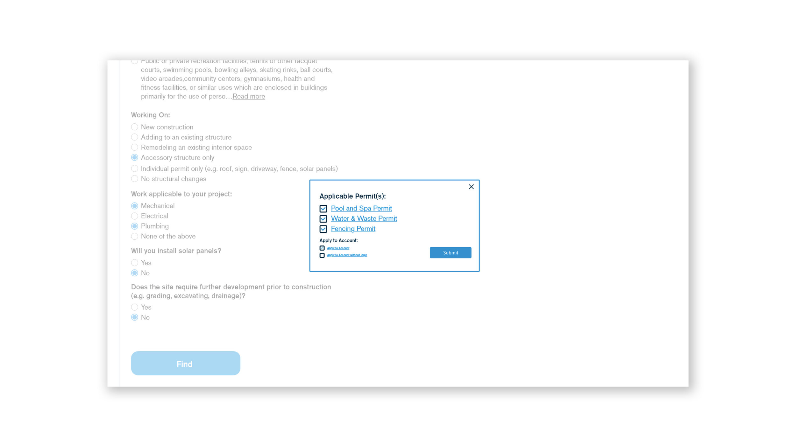
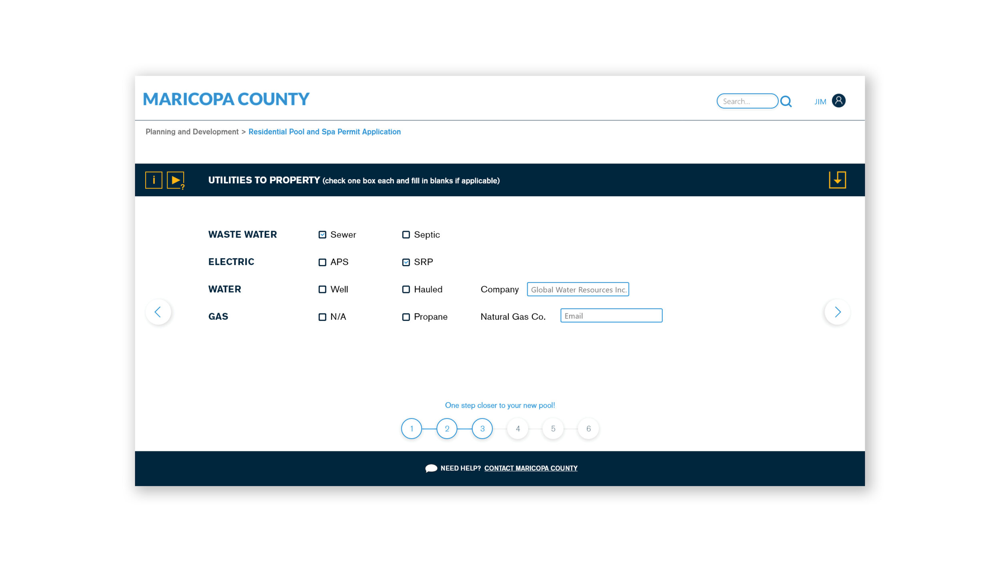

Project Overview
The objective was to collaborate with the Maricopa County Department of Innovation Studio to focus on the permitting service's website of three departments: Planning and Development, Environmental Services, and Air Quality. Maricopa County was looking to consolidate all online permit applications from all departments into one seamless system to reduce time, energy, and stress for both clients and Maricopa County staff members. We did research, ideation, and revisions with my group to create our final website redesign for Maricopa County.


Empathize
From our research, we learned that the main issue is a lack of understanding of the permit process and requirements along with the overwhelming nature of government documents.
Existing Permit Service Findings
Positives:
- -Once the user knew which permit was needed, it only took about 10-15 minutes to complete the application
- -The kiosk at the in-person one-stop-shop worked well to help users
- -Able to maintain contact with a staff member
Negatives:
- -Trouble figuring out which permit to apply for
- -Navigation through permits is confusing
- -A lot of unnecessary tex
- -No account option to access information
- -Hard to understand where to send information to
Interview Takeaways
Staff:
- -The EPA requires certain steps that can not be done online.
- -Common issues (missing permit information)
- -The representative calls the applicant and fixes all the missing information.
Users:
- -Had trouble figuring out which permit to apply for
- -Felt as though the application required unnecessary information
- -The login page is confusing and there is no "my account" to access the information
- -User login info for the cloud folder was different from the account login
- -Felt strange uploading permits and documents to the shared cloud folder
- -Could see other clients’ plans and documents in the cloud folder
- -When filling in the information, users unsure of all information needed
- -Must complete permit in one sitting, cannot save and return later
Competitive Analysis
- -Step-by-step guide
- -User Accounts
- -User Accessibility
- -Access past applications for renewals or new projects with adjustments.
- -Text is simple to follow
- -Documents easy to access and share
Define

User Pain Points
- -Login page is confusing
- -Users are unable to finish the permit process
- -No easy online payment options
- -Trouble figuring out which permit to apply for
- -Unable to save process
- -Text has too much information
- -New users have many permit mistakes
Ideate
The group brainstormed on some ideas before creating content for the Maricopa County staff. We designed storyboards and user flows to show Maricopa County staff members for an initial round of feedback. The feedback helped refine our ideas and let us create a holistic solution for the issue.
Solution
Guided Permit Finder
Users who are unsure of which permit they need can answer a series of questions that will result in a list of all the permits required for their project and links to their applications. The individual permit pages outline exactly what is necessary to complete that specific application. From here, users can decide to follow a guided application or use the standard, fillable pdf application depending on their experience level.
Guided Permit Application
For new users or those who are not comfortable with the traditional application, we designed a guided application. The permit application is broken up into sections to make the content less overwhelming. Each section will also have icons for written or video instructions for how to answer the questions on that page, minimizing the amount of help needed by the user from Maricopa County staff and saving time.
Login & Account
Finally, we redesigned the login and account interfaces to allow users to have access to it at any point during the application process. This allows users to keep track of all applications and payments in one system and make the interface more intuitive and user-friendly.
.jpg)